Centralized Policy - Application Aware Routing
Task 4 – Application-Aware Routing (AAR) Policy
In this task, you will configure a Centralized Policy to define Transport Preferences for different applications using Application-Aware Routing (AAR). You will also verify that different applications use different transport paths based on their SLA requirements.
✅ Step 1: Review AAR Policy – VPN10_AAR
-
Review the AAR Policy
VPN10_AAR, which sets transport preferences for three business application groups: -
DSCP 46
- DSCP 41 / 31 / 21
- SIP Applications
🔸 Note: Application List and SLA List are pre-defined
a. Navigate to:
Configuration > Policies > Custom Options > Centralized Policy > Traffic Policy
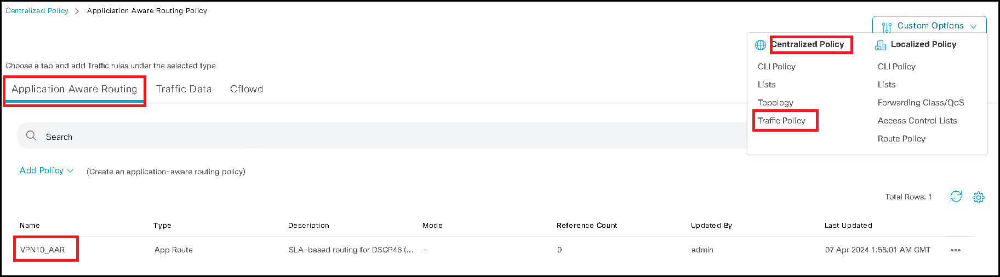
b. Open VPN10_AAR in View Mode
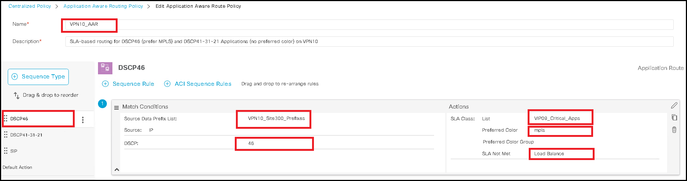
- 📌 Rule 1: DSCP 46 (e.g., critical apps)
- Match: Source from prefix list
VPN10_Site300_Prefixeswith DSCP 46 - Action: Prefer MPLS Transport if SLA
VIP09_Critical_Appsis met - If SLA not met: Load Share over all available paths (fallback)
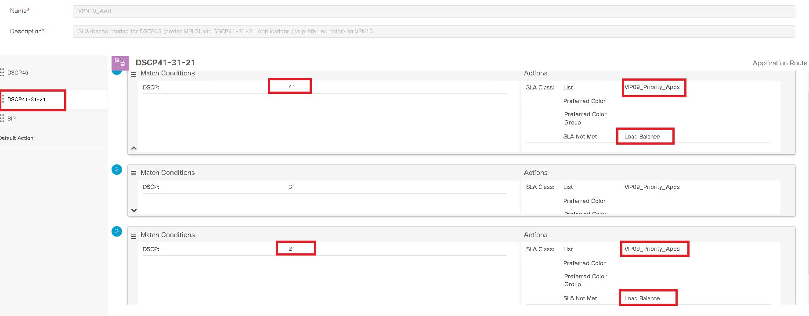
- 📌 Rule 2: DSCP 21 / 31 / 41 (e.g., standard business apps)
- Match: Applications with DSCP 21 / 31 / 41
- Action: Use all paths that meet SLA
- If SLA not met: Load Share over all available paths
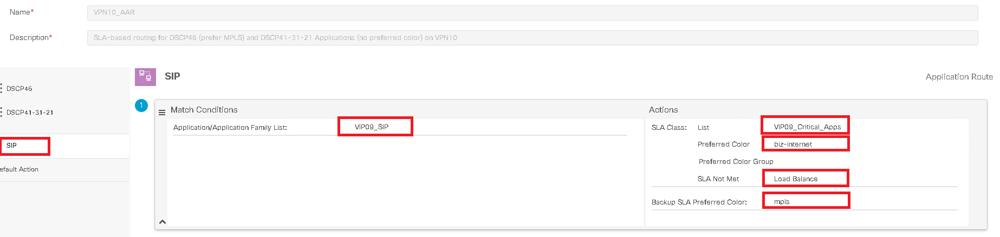
- 📌 Rule 3: SIP Applications
- Match: Applications in list
VIP09_SIP - Action: Prefer Biz-Internet if SLA is met
- If not: Prefer MPLS
✅ Step 2: Apply AAR Policy to All Sites on VPN10
- Apply
VPN10_AARpolicy to all sites in VPN10.
a. Navigate to:
Configuration > Policies > Centralized Policy
b. Open Central-Policy-v1 in Edit Mode
c. Import VPN10_AAR policy
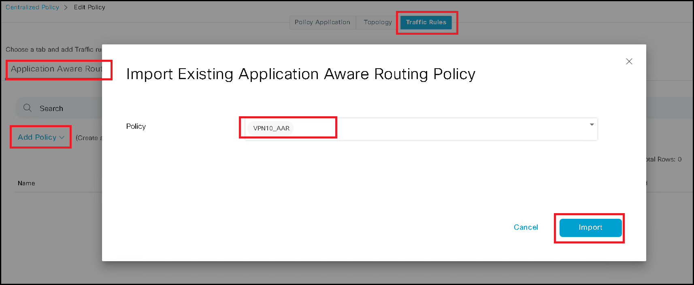
d. Under Policy Application, choose to apply VPN10_AAR to:
👉 All Sites > VPN10
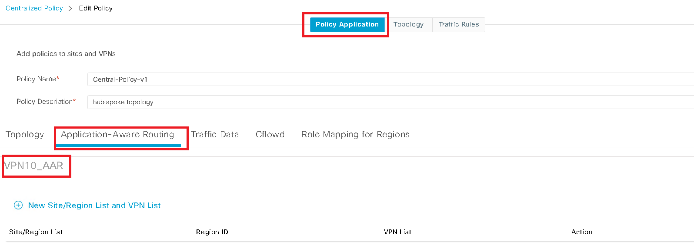
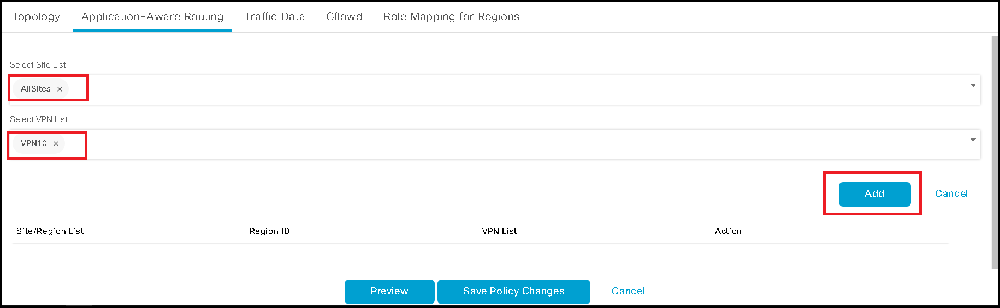
e. After adding the policy:
- Click Save Policy Changes
- This will push the configuration to vSmart Controllers
✅ Step 3: Verify AAR Policy
- Test and verify the behavior of AAR policy via Simulated Flow Analysis.
a. Navigate to:
Monitor > Devices > Site300-cE1 > Troubleshooting > Simulate Flows
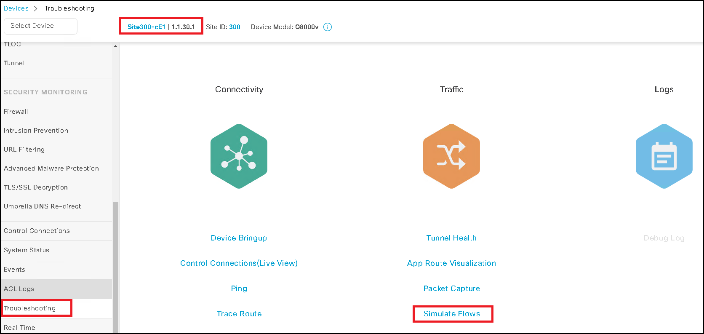
b. Simulate flow with DSCP 46 to destination 10.10.1.1
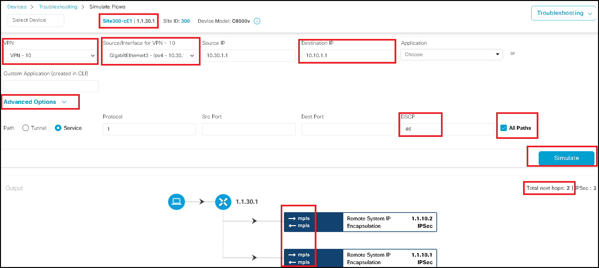
c. Simulate flow with DSCP 21 to destination 10.10.1.1
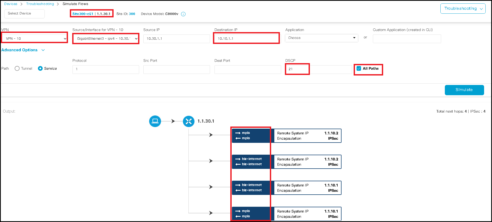
d. Simulate SIP Application Flow to destination 10.10.1.1
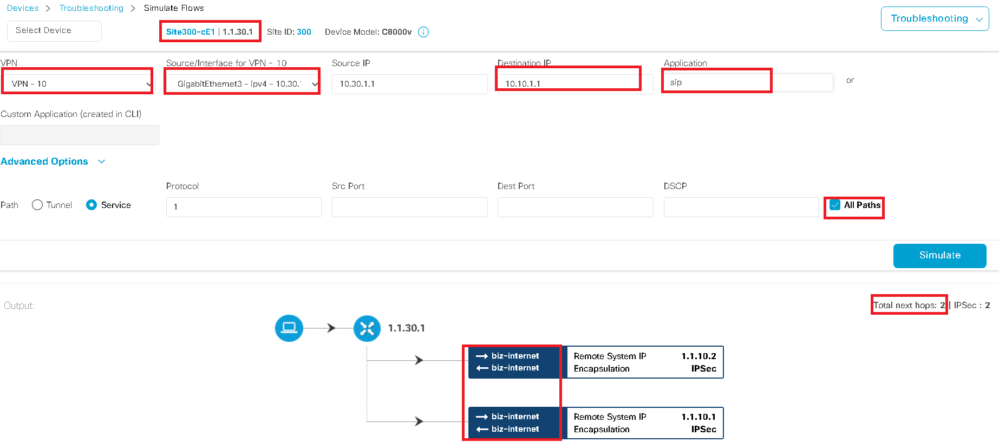
❓ Question to Think About
In a scenario where both AAR and Central Data Policy match a packet, which policy takes precedence?
📌 Hint: Consider policy application order and the precedence of AAR over Data Policy for path selection logic.